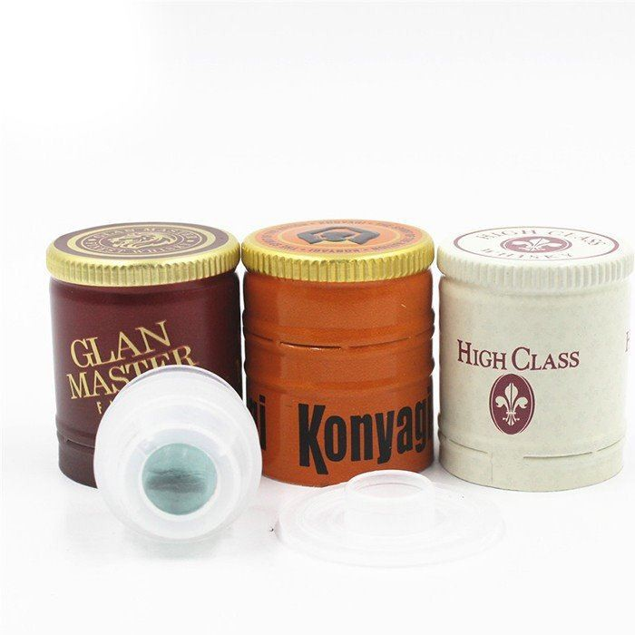
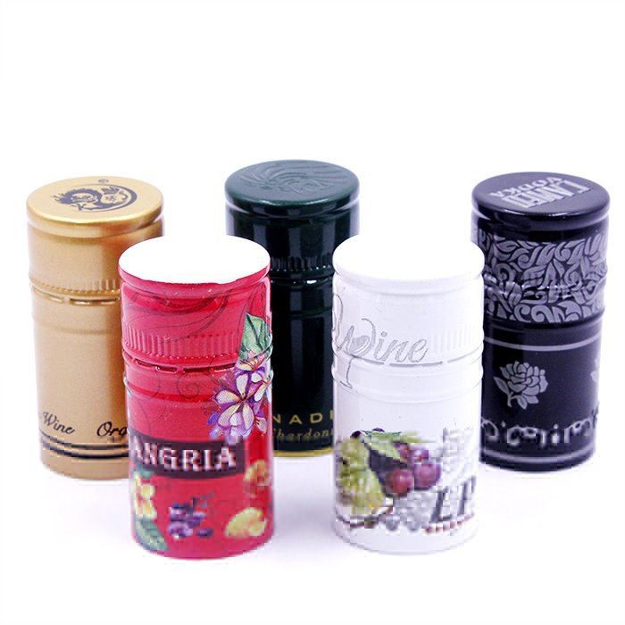

Hey there, wine enthusiasts and industry folks! I'm a supplier of Wine Foil Caps, and today I wanna chat about how these little caps play a big role in protecting wine from microbial contamination.
First off, let's understand why microbial contamination is such a big deal in the wine world. Wine is a complex beverage made through fermentation, and it's full of sugars, acids, and other compounds that can be a feast for microbes like bacteria, yeasts, and molds. If these unwanted guests get into the wine, they can cause all sorts of problems. Bacteria can turn the wine sour, yeasts can cause further fermentation, leading to off - flavors and unwanted carbonation, and molds can just ruin the whole taste and quality of the wine.
So, how do our Wine Foil Caps step in to save the day?
Physical Barrier
One of the most basic yet crucial ways our Wine Foil Caps protect against microbial contamination is by acting as a physical barrier. When you seal a wine bottle with a foil cap, you're essentially creating a shield that keeps out dust, dirt, and airborne microbes. These caps are designed to fit snugly around the neck of the bottle, covering the cork or screw - top. This tight fit prevents any external particles from getting into the bottle through the small gaps around the closure.
Think about it like a fortress wall. The wine inside the bottle is the precious treasure, and the foil cap is the wall that stops the invaders (microbes) from getting in. It's a simple concept, but it's incredibly effective. Whether the wine is stored in a cellar, a warehouse, or on a store shelf, the foil cap is there, doing its job silently.
Oxygen and Moisture Control
Microbes need certain conditions to thrive, and oxygen and moisture are two of the key factors. Our Wine Foil Caps help control the levels of oxygen and moisture around the wine bottle. By creating a sealed environment, they reduce the amount of oxygen that can reach the wine. Oxygen can be a double - edged sword for wine. While a little bit is needed during the aging process, too much can lead to oxidation, which not only affects the taste but also provides a more favorable environment for some microbes.
Moisture is another issue. High humidity can encourage the growth of mold on the cork or the outside of the bottle. Our foil caps act as a barrier, preventing excess moisture from reaching the cork. If the cork gets too wet, it can start to break down, creating a pathway for microbes to enter the bottle. The foil cap keeps the cork dry and in good condition, further protecting the wine from contamination.
Tamper - Evidence
In addition to protecting against microbial contamination, our Wine Foil Caps also provide tamper - evidence. A damaged or opened foil cap is a clear sign that something might be wrong with the wine. This is important because if the seal has been broken, there's a higher risk of microbial contamination. For example, if someone has opened the bottle and then tried to reseal it, the foil cap won't look the same as it did when it was originally sealed at the winery. This gives consumers and retailers an extra layer of confidence in the quality and safety of the wine.
Now, let's talk about the different types of Wine Foil Caps we offer.
We have Wine Bottle Top Covers. These are great for traditional wine bottles with cork closures. They come in a variety of designs and colors, so wineries can choose the one that best suits their brand. The covers fit perfectly over the cork, providing that extra protection against microbes and adding a touch of elegance to the bottle.


For those who prefer screw - top wine bottles, we have Wine Bottle Screw Top. These caps are specifically designed to work with screw - top closures. They offer the same level of protection as the cork - cover caps, but they're tailored to the unique shape and requirements of screw - top bottles. They're easy to apply and remove, and they still provide a tight seal to keep out microbes.
And then there's our Aluminum Plastic Cap With Glassball. This is a more innovative design. The glass ball in the cap not only adds a decorative element but also has some practical benefits. It can help with the visual inspection of the wine's condition. If the wine has been contaminated, there might be some visible changes in the appearance of the wine near the neck of the bottle, and the glass ball allows for a quick check without having to open the bottle.
Compatibility with Different Closures
Our Wine Foil Caps are designed to be compatible with various types of wine closures, including corks and screw - tops. Corks have been used for centuries to seal wine bottles, and they're still a popular choice. Our foil caps work well with corks, protecting them from damage and microbial growth. They also help maintain the integrity of the cork, which is important for the long - term storage of wine.
Screw - tops, on the other hand, are becoming increasingly popular due to their convenience and reliability. Our foil caps for screw - tops are designed to fit over the screw - top mechanism, providing the same level of protection as they do for cork - sealed bottles. Whether a winery uses traditional corks or modern screw - tops, our Wine Foil Caps can be the perfect addition to their packaging.
Quality Assurance
At our company, we take quality seriously. Our Wine Foil Caps are made from high - quality materials that are food - grade and safe for use with wine. We use advanced manufacturing processes to ensure that each cap meets the highest standards. Every cap is inspected for defects before it leaves our factory. This strict quality control means that wineries can trust our caps to do their job effectively in protecting their wine from microbial contamination.
We also offer customization options. Wineries can choose the color, design, and printing on the foil caps to match their brand identity. This not only helps with marketing but also ensures that the caps are a perfect fit for their specific needs.
The Bottom Line
In conclusion, our Wine Foil Caps are an essential part of the wine packaging process. They protect wine from microbial contamination in multiple ways, from acting as a physical barrier to controlling oxygen and moisture levels. Whether you're a small - batch winery or a large - scale producer, our caps can help you maintain the quality and integrity of your wine.
If you're in the wine industry and are looking for high - quality Wine Foil Caps, we'd love to hear from you. We can provide samples, discuss your specific requirements, and offer competitive pricing. Contact us today to start a conversation about how our caps can benefit your wine business. Let's work together to keep your wine safe and delicious!
References
- Jackson, R. S. (2008). Wine Science: Principles and Applications. Academic Press.
- Amerine, M. A., & Ough, C. S. (1980). Wine: The Art and Science of Wine Making. University of California Press.